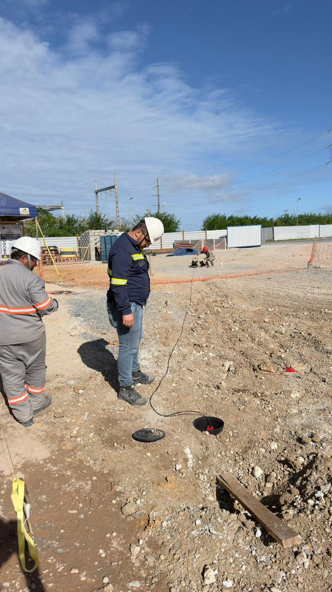
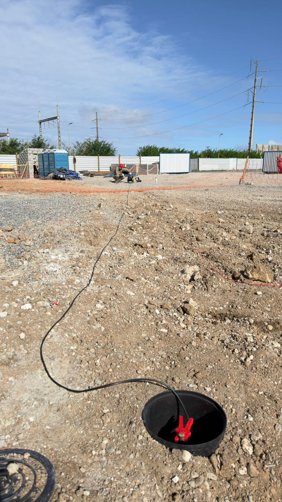
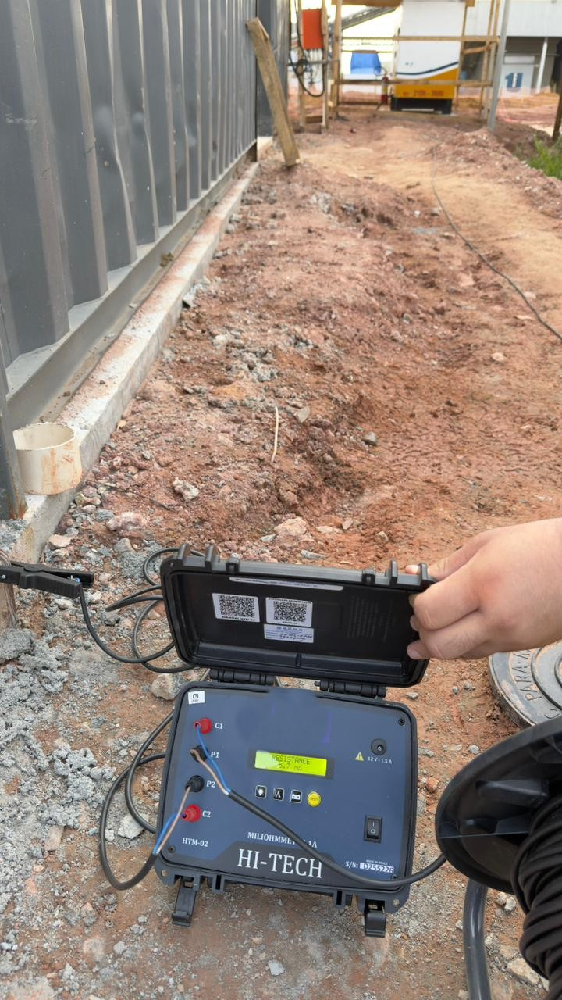

A inspeção técnica teve como objetivo verificar as condições operacionais do SPDA e do sistema de aterramento da instalação, avaliando seus componentes físicos, conexões, descidas, pontos de equipotencialização e desempenho elétrico.
Durante os trabalhos foram realizados ensaios de resistência de aterramento e continuidade elétrica, permitindo identificar a eficiência da malha, a integridade das interligações e possíveis necessidades de adequação.
Os resultados obtidos fornecem informações essenciais para manutenção preventiva, regularização técnica, auditorias, seguradoras e tomada de decisão quanto à segurança da instalação.

Foram inspecionados os elementos que compõem o sistema de proteção contra descargas atmosféricas, incluindo captores, descidas, conexões, suportações, caixas de inspeção e pontos de equipotencialização.
Essa etapa permite identificar falhas visíveis, como corrosão, danos mecânicos, desconexões, ausência de componentes ou alterações realizadas na instalação.
Uma inspeção visual bem executada é o primeiro passo para garantir a confiabilidade do sistema.

A medição de resistência de aterramento foi realizada com o objetivo de avaliar a capacidade do sistema em dissipar correntes elétricas para o solo de forma segura.
O ensaio foi executado em campo com instrumento apropriado, seguindo procedimento técnico para obtenção de valores confiáveis e compatíveis com a análise do sistema.
A qualidade do aterramento influencia diretamente a segurança elétrica da instalação.

O ensaio de continuidade elétrica foi realizado para verificar se os elementos do SPDA estão devidamente interligados, formando um caminho contínuo para condução das correntes provenientes de descargas atmosféricas.
Esse procedimento é essencial para confirmar a integridade elétrica das conexões, descidas, condutores e pontos de equipotencialização.
Uma conexão interrompida pode comprometer toda a proteção da instalação.

As medições foram executadas diretamente em campo, com metodologia adequada e registros fotográficos para comprovação das condições encontradas durante a inspeção.
A rastreabilidade dos ensaios permite maior segurança na análise dos resultados e na emissão do relatório técnico.
Ensaios bem documentados transformam medições em evidências técnicas confiáveis.
Após a conclusão da inspeção e dos ensaios, os resultados são consolidados em relatório técnico contendo as medições obtidas, registros fotográficos, análise das condições do sistema e recomendações quando aplicáveis.
O documento técnico serve como evidência da condição do SPDA e do sistema de aterramento na data da inspeção.
Um relatório bem fundamentado dá clareza técnica para decisões de manutenção e segurança.
Inspeções baseadas na ABNT NBR 5419 e nas boas práticas de engenharia elétrica.
Medições de resistência de aterramento e continuidade elétrica executadas diretamente na instalação.
Relatório técnico com registros, resultados, análise e recomendações de adequação.
Serviço conduzido por engenheiro eletricista habilitado, com emissão de ART quando aplicável.
Análise da instalação e definição dos pontos de inspeção.
Verificação física dos componentes do SPDA e aterramento.
Medições de resistência de aterramento e continuidade elétrica.
Avaliação dos resultados e identificação de eventuais não conformidades.
Entrega da documentação técnica e emissão da responsabilidade técnica.
Apenas uma inspeção técnica acompanhada de ensaios elétricos pode comprovar a eficiência do SPDA e do sistema de aterramento da instalação.
Realizamos inspeções, medições, laudos técnicos e projetos de adequação para indústrias, condomínios, comércios e edificações em geral.
Falar no WhatsApp